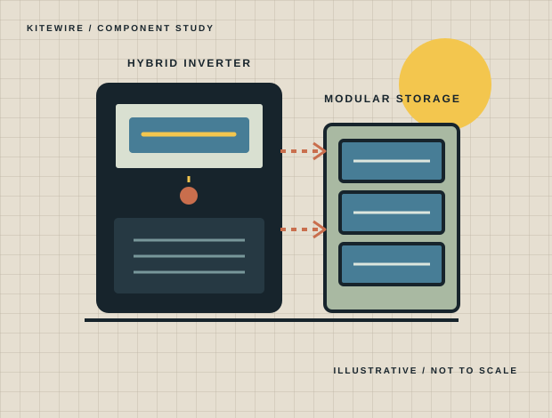

Essential backup
A focused backup arrangement for selected lighting, refrigeration, connectivity and device charging. Solar can be considered as a charging source where the site supports it.
01 / SYSTEMS, NOT BOXES
Start with the job your energy system must do. We can then explore the right mix of solar generation, battery storage, inverter capacity and grid connection.
Talk through a project ↗
FIG. 02 / STORAGEA / FOR THE HOME
A residential brief begins with essential circuits and the hours they need to run — not a promise that every appliance can operate at once.
A focused backup arrangement for selected lighting, refrigeration, connectivity and device charging. Solar can be considered as a charging source where the site supports it.
A rooftop PV and battery concept designed around household usage, grid interaction, roof geometry and a realistic plan for future loads.
A more involved assessment for larger homes, multiple high-demand appliances or phased expansion. High-power loads need their own review.
B / FOR THE WORKDAY
Small businesses often need a system that understands opening hours, equipment cycles and the cost of interruption.
Prioritise point-of-sale, routers, lighting, security and selected workstations. Separate critical and non-critical circuits in the design conversation.
Refrigeration needs a careful look at compressor start-up, temperature risk, duty cycle and the consequences of a long outage.
Motors, tools and variable operating patterns require measured loads and a clear distinction between essential and heavy equipment.
C / FOR PRODUCTIVE SITES
Remote equipment and water systems can be excellent solar candidates, but they are not simple plug-in loads. Pump head, flow, run-time, seasonal demand and water storage all matter.

Start with the task: how much water, how far, how often? Or what equipment needs to run, at what time of day? The site brief comes before the component list.
WHAT GOES INTO A SYSTEM
Products are selected after the load, site and operating brief are understood. These are the building blocks, not a fixed shopping list.
Convert available sunlight into electrical energy. Roof direction, shade, structure and access all affect the array plan.
Coordinates energy between PV, battery, grid and the building's electrical system, within its approved operating limits.
Stores energy for later use. Chemistry, usable capacity, temperature, cycle limits and protection must be checked.
Mounting, isolators, breakers, surge protection, cabling, earthing and labels are part of the system — not optional extras.
NEXT STEP
Tell us what you want to power and where the system will live.